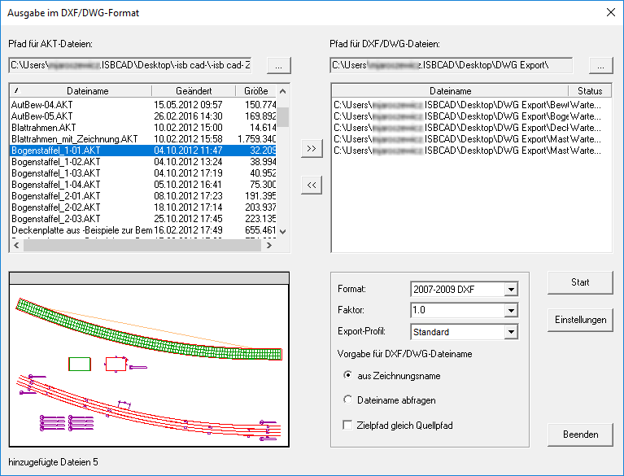

Windows-Startmenü → Programmgruppe ISBCAD 2026 → Hauptmenü → DXF/DWG Export.
Speichern einer oder mehrerer ISBCAD Dateien im DXF- oder DWG-Format. Öffnet den Dialog Ausgabe im DXF/DWG-Format.
Sie können mehrere ISBCAD Dateien im DXF- oder DWG-Format ausgeben, wenn diese im selben Verzeichnis liegen. Wenn Sie nur eine ISBCAD Zeichnung im DXF- oder DWG-Format speichern wollen, können Sie diese auch im Zeichenprogramm öffnen und über die Funktion [Export] exportieren.
So wird's gemacht:
§Wählen Sie im Dialog Ausgabe im DXF/DWG-Format das gewünschte Verzeichnis.
§Wählen Sie unter Format das gewünschte AutoCAD-Format.
Die verschiedenen DXF-Versionen unterscheiden sich in den folgenden Punkten:
AutoCAD-Formate |
|
|---|---|
R12 DXF vereinfacht |
Es werden nur Linien, Kreise und Texte übertragen. Zur Übergabe an beliebige CAD-Programme. |
R12 DXF |
Wie R12 DXF vereinfacht, zusätzlich werden Maßketten übertragen. |
R13 DXF |
Zusätzlich werden gefüllte Flächen und Bitmaps übertragen. |
R14 DXF |
Mit Textblöcken bzw. mehrzeiligen Texten. |
R14 DWG |
Die Daten werden im binären AutoCAD Format geschrieben. |
2000 DXF/DWG und höher |
Unterschiedliche AutoCAD-Versionen. |
§Klicken Sie auf Start.
Die gewählten Dateien werden im gewählten AutoCAD-Format gespeichert.
Optionen im Dialog "Ausgabe im DXF/DWG-Format"
 |
Pfad für AKT-Dateien
Verzeichnis, in dem die umzuwandelnden ISBCAD Dateien liegen. Die im Verzeichnis liegenden AKT-Dateien werden in der Dateiliste angezeigt.
|
Öffnet die Verzeichnisauswahl. |

Dateiliste (Dateiname/Geändert/Größe)
Auflistung der vorhandenen ISBCAD Dateien.
Zeichnungsdateien, die im DXF- oder DWG-Format ausgegeben werden sollen, müssen markiert und mittels  in die rechte Liste übernommen werden. Mehrfachauswahl mittels Strg + A, Umschalt + LM oder Strg + LM möglich. Sie können eine Zeichnung auch mit einem Doppelklick in die eine oder andere Liste übertragen.
in die rechte Liste übernommen werden. Mehrfachauswahl mittels Strg + A, Umschalt + LM oder Strg + LM möglich. Sie können eine Zeichnung auch mit einem Doppelklick in die eine oder andere Liste übertragen.
Vorschau
Die markierte Datei wird in der Vorschau angezeigt.
Pfad für DXF/DWG-Dateien
Verzeichnis, in dem die bei der Umwandlung erzeugten DXF- bzw. DWG-Dateien gespeichert werden sollen.
Nur auswählbar, wenn die Option Zielpfad gleich Quellpfad (s. unten) deaktiviert ist.
|
Öffnet die Verzeichnisauswahl. |
Dateiliste (Dateiname/Geändert/Größe)
In diesem Feld werden alle Zeichnungsdateien (*.DXF bzw. *.DWG) aufgelistet, die sich in diesem Ordner befinden.
Markierte Dateien können mittels  aus der Liste entfernt werden. Mehrfachauswahl mittels Strg + A, Umschalt + LM oder Strg + LM möglich.
aus der Liste entfernt werden. Mehrfachauswahl mittels Strg + A, Umschalt + LM oder Strg + LM möglich.
Format
Öffnen Sie die Dropdown-Liste mit  und wählen Sie einen der angebotenen Dateiformate aus, in der die Dateien abgespeichert werden sollen.
und wählen Sie einen der angebotenen Dateiformate aus, in der die Dateien abgespeichert werden sollen.
Faktor
Geben Sie den Umrechnungsfaktor für die Koordinaten an. Es gilt: F = M / 100, wenn eine Zeichnungseinheit einem Meter entspricht.
Faktor für Texte
Für den Fall, dass die Texte nicht mit dem Faktor für Geometrie gekoppelt sind, können Sie so die Größe der Texte anpassen.
Export-Profil
Es können beliebig viele Profile gespeichert werden. (s. Option Einstellungen → Export-Profile). Wählen Sie eines davon aus. Es wird auf alle Dateien angewendet.
Vorgabe für DXF/DWG-Dateiname
Auswahl, wie die DXF/DWG-Dateien gespeichert werden sollen.
aus Zeichnungsname |
Alle gewählten Dateien erhalten den jeweiligen Zeichnungsnamen mit der Dateiendung *.DXF oder *.DWG. |
Dateiname abfragen |
Für jede Datei wird separat ein Dateiname abgefragt. |
Zielpfad gleich Quellpfad |
Ein Haken in der Checkbox bewirkt, dass die DXF/DWG‑Dateien in den Ordnern gespeichert werden, in denen sich auch die ISBCAD Dateien befinden. |

Startet die Umwandlung.
Nach vollständiger Umwandlung wird in der Dateiliste unter Status "Fertig" angezeigt.

Öffnet den Dialog Einstellungen.
Optionen im Dialog "Einstellungen"
Konfiguration der Attribut-Übernahme beim Export von AutoCAD-Dateien.
Um ein Attribut zu ändern, klicken Sie in der Tabelle das entsprechende Element an und wählen Sie aus der Dropdown-Liste die gewünschte Einstellung.

ISBCAD Stiftnummer Auflistung der verwendeten Stifte mit den Bildschirmfarben. AutoCAD Farbe Ändern Sie die Farbe für die Ausgabedatei, indem Sie in das Farbfeld klicken. In dem sich öffnenden Auswahlfeld können den Stift auswählen, der in der DXF/DWG-Datei benutzt werden soll. Mit der AutoCAD-spezifischen Einstellungen By Layer können Sie den Stift mit der gewünschten Eigenschaft ausstatten. Linienstärke (By Layer / By Block / Default) Auswahl der Linienstärke. AutoCAD-spezifische Einstellungen. Hierbei steuert By Layer das Aussehen der AutoCAD-Objekte auf dem Layer und By Block das Aussehen der Objekte innerhalb einer Blockdefinition. Export Eigenschaft exportieren? ( |


ISBCAD Font In der Tabelle werden die in den Zeichnungen benutzten Schriftarten angezeigt. AutoCAD Font Auswahl der Schriftart. Export Eigenschaft exportieren? ( |
ISBCAD Folien Auflistung der benutzten Folien der aktuellen Datei. AutoCAD Layer Weisen Sie den Folien AutoCAD-Layer zu. Der Layername kann editiert werden. Farbe Den Layern können Farben zugewiesen werden. Linientyp Den Layern können Linientypen zugewiesen werden. Linienstärke Die Strichbreite kann für jeden Layer gewählt werden. Export Eigenschaft exportieren? ( |
ISBCAD Schraffur In der Tabelle werden die in den Zeichnungen benutzten Schraffuren angezeigt. AutoCAD-Schraffur Sie müssen für jede Schraffur eine Auswahl treffen. Grundlage ist die AcPattern.txt, diese befindet sich im Programmordner. Damit die Zuordnung übernommen wird, setzen Sie auf der Registerkarte Optionen einen Haken bei AutoCAD Schraffur aus Zuordnungstabelle. Faktor Damit die Schraffur zur Geometrie passt, können Sie hier einen Faktor eingeben oder auswählen. Winkel Angabe des Schraffurwinkels für die AutiCAD-Schraffur. Klicken Sie in die Zelle und wählen Sie einen Winkel aus. Geben Sie alternativ einen Winkel ein. Export Eintrag exportieren? ( |
ISBCAD Strichtyp Auflistung der benutzten Strichtypen in den AKT-Dateien. AutoCAD Linienart Auswahl einer Linienart für die Zieldatei. Export Eigenschaft exportieren? ( |
Setzen Sie einen Haken þ bei den Optionen, die beim Exportieren berücksichtigt werden sollen.Stifte
Folien
Texte
Schraffuren
Plotstil-Tabelle
Koordinaten transformieren
Sonstiges
Protokoll
|

Verfügbare Export-Profile Auflistung aller auf Ihrem System verfügbaren Export-Profile. Es können beliebig viele Profile gespeichert werden. Das aktuell eingestellte Export-Profil wird Ihnen im unteren linken Dialogbereich angezeigt. 1.Um ein Export-Profil zu aktivieren, klicken Sie dieses in der Liste an. 2.Klicken Sie auf Profil aktivieren. 3.Klicken Sie abschließend auf Übernehmen.
|


Übernimmt die vorgenommenen Einstellungen und schließt den Dialog.

Bricht die Bearbeitung ab und schließt den Dialog. Alle vorgenommenen Einstellungen werden zurückgesetzt.

Übernimmt die bisher vorgenommenen Einstellungen. Der Dialog bleibt geöffnet.